数理逻辑 第 10 讲｜一阶逻辑的自然推理系统 G
承接第 6-9 章：已经有了一阶逻辑的语法（第 6 章）、语义（第 7 章）、可靠性 / 完备性的陈述（第 8 章）、以及完备性所需的项模型机器（第 9 章 Hintikka 集）。
本讲补的缺口：给一阶逻辑配一个真正能"写"出来的句法演算系统 G（Gentzen 矢列演算 LK 风格），并证明 可靠性（Γ⊢Δ ⇒ Γ⊨Δ）。完备性留到下一讲。
★ BG1 · 本讲地图 & 与前章的承接
从哪儿来：
- 第 6 章给了一阶逻辑的语法：项、公式、自由 / 约束变元、项替换 A[t/x]、结构归纳法。
- 第 7 章给了一阶逻辑的语义：结构 𝕄=(M,I)、赋值 σ、t𝕄[σ]、A𝕄[σ]、语义结论 Γ ⊨ A、可满足、引理 3.16 / 3.20、逻辑等价 ≃。
- 第 8 章：陈述了一阶逻辑形式系统 + 可靠性 + 完备性（但具体演算系统留白）。
- 第 9 章：给出了完备性的"半成品"——Hintikka 集 → 项模型 → 引理 3.41「任何 Hintikka 集必可满足」。
本讲做什么：
- 把第 8 章留白的"形式系统"用 Gentzen 矢列演算 G 实例化（命题 G' 升级到一阶）。
- 给出 G 的所有规则、证明树、可证性的精确定义。
- 积累一批导出规则（反证法、MP、三段论 ……）以便实战写证明。
- 把矢列 Γ⊢Δ 的语义 Γ⊨Δ 严格定义出来。
- 证明可靠性定理：G 里可证的矢列都是有效的。
到哪儿去（预告）：下一讲要证完备性 —— 把一个一致集扩张为 Hintikka 集（Lindenbaum-Henkin 风格，要往字母表里新加常元作为 witness），然后接第 9 章的项模型。本讲不涉及这一步。
★ BG2 · 命题 G' 与一阶 G 的对照表
你已经学过的命题自然推理系统 G' 是矢列演算 LK 的命题片段。一阶 G 在 G' 基础上加了量词规则，整体形式几乎照搬。
| 成分 | 命题 G' | 一阶 G | 差异 |
|---|---|---|---|
| 矢列 Γ⊢Δ | 两边都是命题公式有穷集 | 两边都是一阶公式有穷集 | 仅"公式"概念升级 |
| 公理 | Γ,A,Δ ⊢ Λ,A,Θ | 同上 | 无变化 |
| ¬L, ¬R, ∨L, ∨R, ∧L, ∧R, →L, →R | 八条 | 八条形式完全一致 | 无变化 |
| 量词规则 | 无 | 新增 ∀L, ∀R, ∃L, ∃R | 本讲新内容 |
| Cut | 有，可消去 | 有，可消去（定理 4.2 陈述） | 陈述照搬 |
1 · G 系统的公理和规则
原 PPT p2-p4（累积三页，只讲完整版 p4）
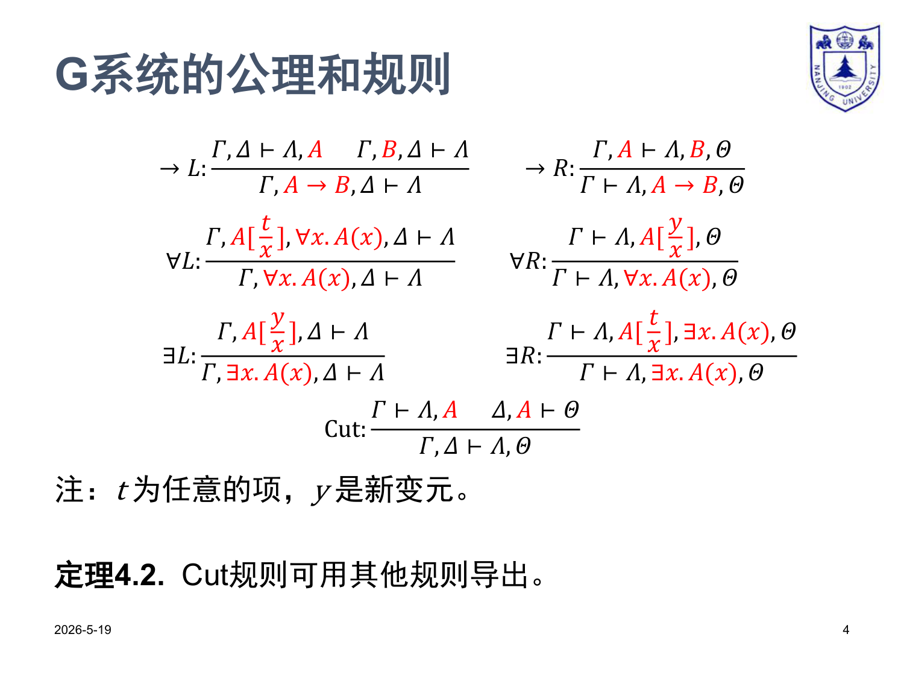
定义 4.1：设 Γ, Δ, Λ, Θ 都是一阶公式的有穷集合。Γ ⊢ Δ 称为矢列，Γ 是其前件，Δ 是其后件。
公理：
左右两侧共享同一个公式 A，就直接是公理（"假设 A 真，结论可以是 A"，trivially 成立）。
逻辑联结词规则（与命题 G' 完全同形）：
| 规则 | 左规则 (L) | 右规则 (R) |
|---|---|---|
| ¬ | Γ, Δ ⊢ Λ, A ⇒ Γ, ¬A, Δ ⊢ Λ | Γ, A ⊢ Λ, Θ ⇒ Γ ⊢ Λ, ¬A, Θ |
| ∨ | Γ, A, Δ ⊢ Λ 且 Γ, B, Δ ⊢ Λ ⇒ Γ, A∨B, Δ ⊢ Λ | Γ ⊢ Λ, A, B, Θ ⇒ Γ ⊢ Λ, A∨B, Θ |
| ∧ | Γ, A, B, Δ ⊢ Λ ⇒ Γ, A∧B, Δ ⊢ Λ | Γ ⊢ Λ, A, Θ 且 Γ ⊢ Λ, B, Θ ⇒ Γ ⊢ Λ, A∧B, Θ |
| → | Γ, Δ ⊢ Λ, A 且 Γ, B, Δ ⊢ Λ ⇒ Γ, A→B, Δ ⊢ Λ | Γ, A ⊢ Λ, B, Θ ⇒ Γ ⊢ Λ, A→B, Θ |
量词规则（本讲新增）：
| 规则 | 形式 | 条件 |
|---|---|---|
| ∀L | Γ, A[t/x], ∀x.A(x), Δ ⊢ Λ ⇒ Γ, ∀x.A(x), Δ ⊢ Λ | t 为任意项 |
| ∀R | Γ ⊢ Λ, A[y/x], Θ ⇒ Γ ⊢ Λ, ∀x.A(x), Θ | y 为新变元 |
| ∃L | Γ, A[y/x], Δ ⊢ Λ ⇒ Γ, ∃x.A(x), Δ ⊢ Λ | y 为新变元 |
| ∃R | Γ ⊢ Λ, A[t/x], ∃x.A(x), Θ ⇒ Γ ⊢ Λ, ∃x.A(x), Θ | t 为任意项 |
Cut 规则：
定理 4.2（Cut 消去定理 / Gentzen Hauptsatz 陈述）：Cut 规则可由其他规则导出。也就是说，任何用了 Cut 的证明都能改写成不用 Cut 的证明。
★ BG3 · 四条量词规则的核心差异
这是本章最容易栽的地方。先把直觉摆清楚：
| 规则 | 使用的项 | 直觉 | 数学语言里对应的话 |
|---|---|---|---|
| ∀L | 任意项 t | "已知 ∀x.A(x) 可用，那对任何具体 t 都能取一个特例 A[t/x]" | "由全称引理，特别地取 t=…" |
| ∃R | 任意项 t | "要证 ∃x.A(x)，只要找到一个具体见证 t 使 A[t/x] 成立" | "取 x = t 即可" |
| ∀R | 新变元 y | "要证 ∀x.A(x)，就引入一个没人用过的 y，证明 A[y/x]" | "任取 y …… 证之" |
| ∃L | 新变元 y | "已知 ∃x.A(x)，给那个未知的见证起一个没人用过的名字 y，假设 A[y/x] 用之" | "令 a 为满足 A(a) 的元素 ……" |
为什么 ∀R / ∃L 必须用新变元，∀L / ∃R 却可以任意 t？
直觉：右边的 ∀x.A(x) 和左边的 ∃x.A(x) 是"强"的（断言"对所有 / 存在"），证它就要用任意 / 取一个名字；左边的 ∀x.A(x) 和右边的 ∃x.A(x) 是"弱"地"用 / 提供"，所以可以为任意具体 t 提供一个例化版本。
★ BG4 · 三大常见陷阱（预告）
用 ∀R 或 ∃L 时，引入的 y 必须不在结论矢列任何公式中自由出现。否则就能假装"证"出 ⊢ P(x)[y/x] → ∀x.P(x) 这种不可证的矢列（本讲末例 (2)）。
∀L / ∃R 用项 t 代入时，需要满足 t 对 x 在 A 中可代入（第 6 章 §2.5）—— 即 t 中的变量在替换位置不会被 A 中的量词意外捕获。如果不可代入，必须先对 A 中冲突的约束变元改名再替换。
公理是"两侧各出现同一个公式 A"，而不是"前件包含后件全部"。例如 P, Q ⊢ P, R 是公理（共享 P），但 P, Q ⊢ R 不是。
2 · 证明树与可证
原 PPT p5-p7（累积 → 只讲 p7）
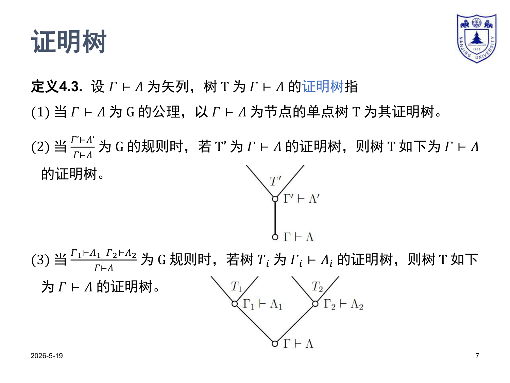
定义 4.3：设 Γ⊢Δ 为矢列。T 是 Γ⊢Δ 的证明树，归纳定义如下：
- 若 Γ⊢Δ 是 G 的公理，则单点树 T={Γ⊢Δ} 就是证明树（叶子 = 公理）。
- 若 (Γ'⊢Δ')/(Γ⊢Δ) 是 G 的某条单前提规则、且 T' 是 Γ'⊢Δ' 的证明树，则把 T' 接在 Γ⊢Δ 上方得到的树 T 是 Γ⊢Δ 的证明树。
- 若 (Γ₁⊢Δ₁ Γ₂⊢Δ₂)/(Γ⊢Δ) 是 G 的某条双前提规则、且 Tᵢ 是 Γᵢ⊢Δᵢ 的证明树，则两棵子树合并接在 Γ⊢Δ 上方得到的 T 是 Γ⊢Δ 的证明树。
原 PPT p8-p9（累积 → 只讲 p9）
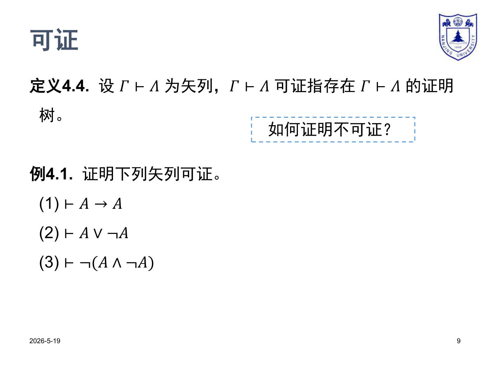
定义 4.4：设 Γ⊢Δ 为矢列。Γ⊢Δ 可证，是指存在一棵 Γ⊢Δ 的证明树。
例 4.1：下列矢列都可证（命题级，演示用）：
- ⊢ A → A （→R 后即 A ⊢ A，公理）
- ⊢ A ∨ ¬A （∨R → ¬R → A ⊢ A, ¬A 之类，公理）
- ⊢ ¬(A ∧ ¬A) （¬R → ∧L → A, ¬A ⊢，再用 ¬L 把 ¬A 翻到右边变公理）
3 · 例题串讲
原 PPT p10：例 4.2 题目
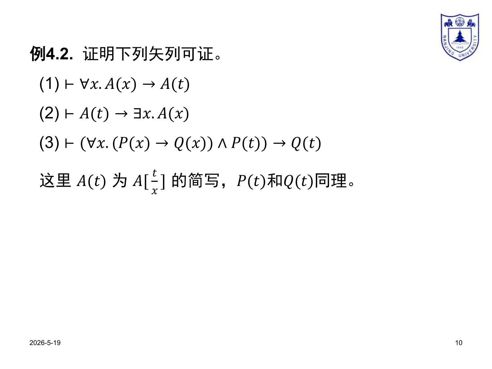
三道经典量词推理题，分别考察 ∀L、∃R、混合规则。约定 A(t) 是 A[t/x] 的简写。
例 4.2 (1)：⊢ ∀x.A(x) → A(t)（PPT p11-p12，p11 略）
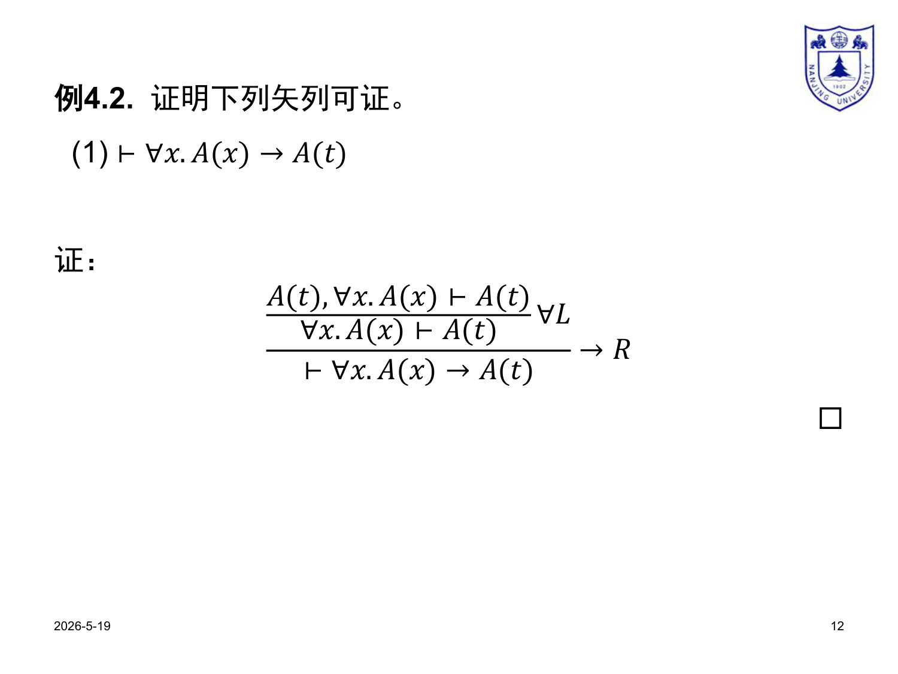
A(t), ∀x.A(x) ⊢ A(t) ← 公理 (左右共享 A(t)) ———————————————————————— ∀L (取 t) ∀x.A(x) ⊢ A(t) ———————————————————————— →R ⊢ ∀x.A(x) → A(t)
例 4.2 (2)：⊢ A(t) → ∃x.A(x)（PPT p13-p14，p13 略）
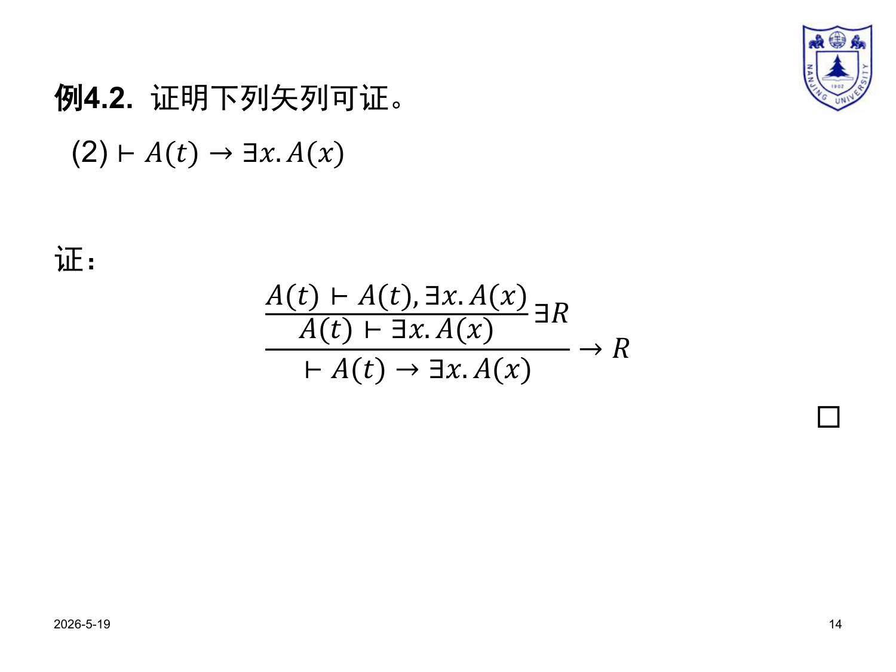
A(t) ⊢ A(t), ∃x.A(x) ← 公理 ———————————————————————— ∃R (取 t) A(t) ⊢ ∃x.A(x) ———————————————————————— →R ⊢ A(t) → ∃x.A(x)
例 4.2 (3)：⊢ (∀x.(P(x)→Q(x)) ∧ P(t)) → Q(t)（PPT p15-p16，p15 略）
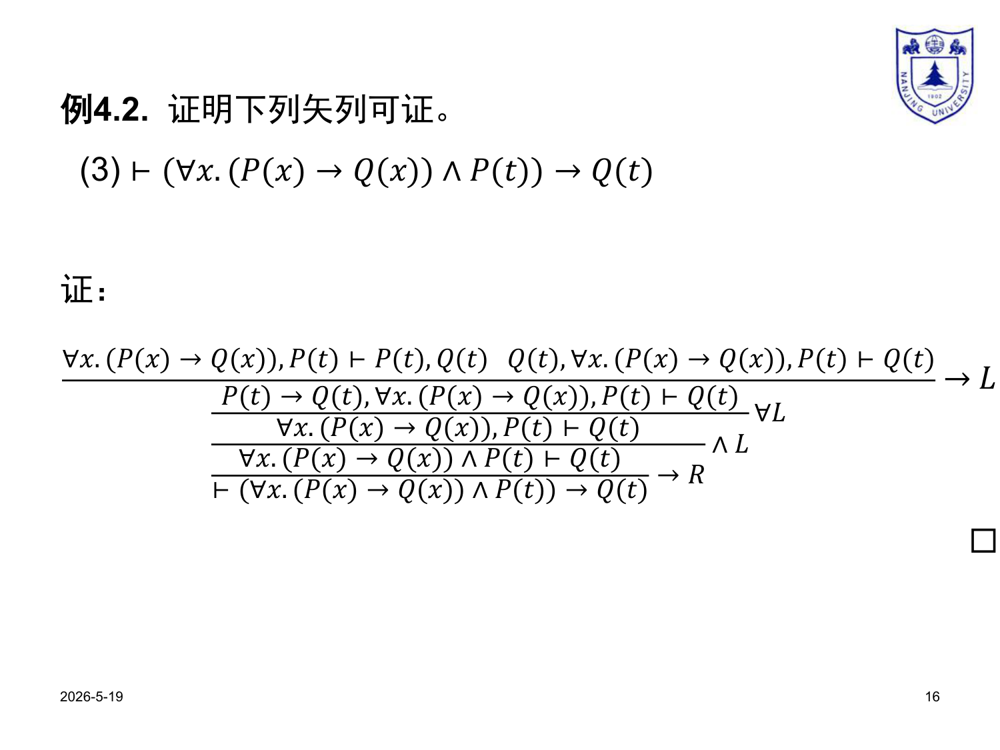
∀x.(P(x)→Q(x)), P(t) ⊢ P(t), Q(t) Q(t), ∀x.(P(x)→Q(x)), P(t) ⊢ Q(t) (左右共享 P(t)) (左右共享 Q(t)) ————————————————————————————————————————————————————————————— →L P(t)→Q(t), ∀x.(P(x)→Q(x)), P(t) ⊢ Q(t) ————————————————————————————————————————— ∀L (取 t) ∀x.(P(x)→Q(x)), P(t) ⊢ Q(t) ————————————————————————————————————————— ∧L ∀x.(P(x)→Q(x)) ∧ P(t) ⊢ Q(t) ————————————————————————————————————————— →R ⊢ (∀x.(P(x)→Q(x)) ∧ P(t)) → Q(t)
例 4.3：∀x.P(x) ∧ ∃y.Q(y) ⊢ P(f(v)) ∧ ∃z.Q(z)（PPT p17-p18，p17 略）
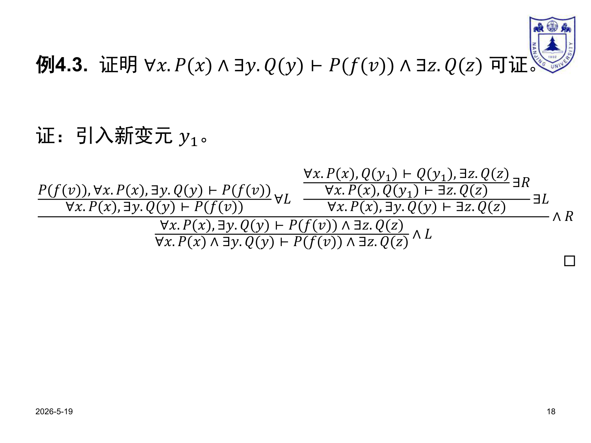
关键步骤：引入新变元 y₁。
P(f(v)), ∀x.P(x), ∃y.Q(y) ⊢ P(f(v)) ∀x.P(x), Q(y₁) ⊢ Q(y₁), ∃z.Q(z)
────────────────────────── ∃R (取 y₁)
∀x.P(x), Q(y₁) ⊢ ∃z.Q(z)
─────────────────────── ∀L (取 f(v)) ────────────────────────── ∃L ★ y₁ 是新变元
∀x.P(x), ∃y.Q(y) ⊢ P(f(v)) ∀x.P(x), ∃y.Q(y) ⊢ ∃z.Q(z)
─────────────────────────────────────────────────────────────────────────── ∧R
∀x.P(x), ∃y.Q(y) ⊢ P(f(v)) ∧ ∃z.Q(z)
─────────────────────────────────────── ∧L
∀x.P(x) ∧ ∃y.Q(y) ⊢ P(f(v)) ∧ ∃z.Q(z)
例 4.4：Cut 的直接应用（PPT p19-p20，p19 略）
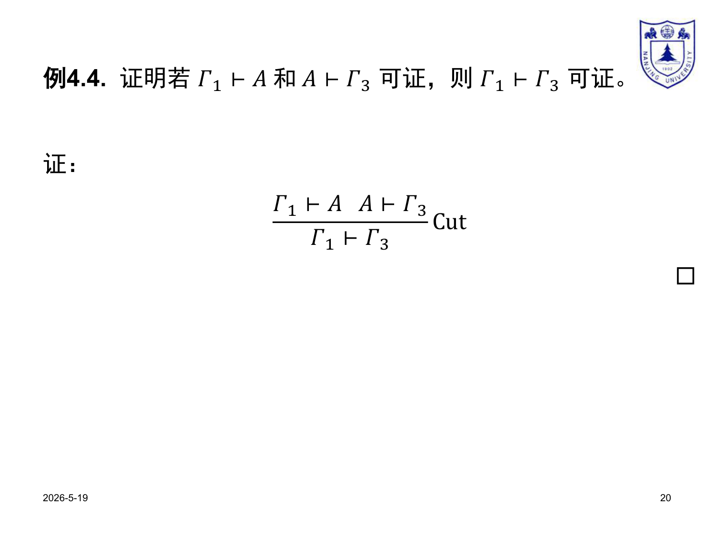
命题：若 Γ₁ ⊢ A 和 A ⊢ Γ₃ 都可证，则 Γ₁ ⊢ Γ₃ 可证。
Γ₁ ⊢ A A ⊢ Γ₃ ————————————————— Cut Γ₁ ⊢ Γ₃
4 · 命题 4.5：矢列折叠为单公式
原 PPT p21-p24（累积 → 只讲 p24）
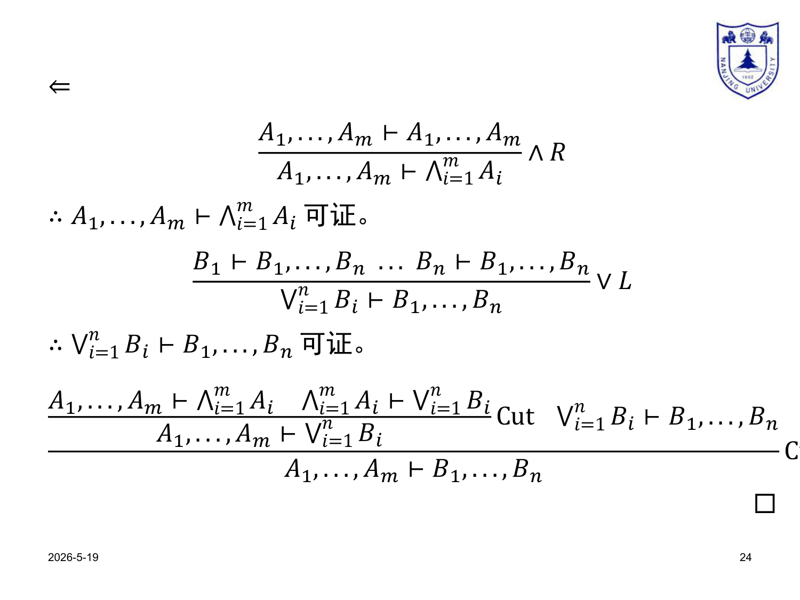
命题 4.5： A₁,…,Aₘ ⊢ B₁,…,Bₙ 可证 ⇔ ⋀ᵢAᵢ ⊢ ⋁ⱼBⱼ 可证。
(⇒) 方向：累用 ∧L 把左侧合并、∨R 把右侧合并。
A₁,…,Aₘ ⊢ B₁,…,Bₙ ———————————————————— ∧L 累用 ⋀Aᵢ ⊢ B₁,…,Bₙ ———————————————————— ∨R 累用 ⋀Aᵢ ⊢ ⋁Bⱼ
(⇐) 方向：需要把单边合取/析取"拆开"。直接拆不出，要先证两个辅助矢列，再 Cut 拼装。
辅助 1：A₁,…,Aₘ ⊢ ⋀Aᵢ （由 A₁,…,Aₘ ⊢ A₁,…,Aₘ 公理 + ∧R 累用得到） 辅助 2：⋁Bⱼ ⊢ B₁,…,Bₙ （由每个 Bᵢ ⊢ B₁,…,Bₙ 公理 + ∨L 累用得到） A₁,…,Aₘ ⊢ ⋀Aᵢ ⋀Aᵢ ⊢ ⋁Bⱼ ——————————————————————————————— Cut (桥梁 = ⋀Aᵢ) A₁,…,Aₘ ⊢ ⋁Bⱼ ⋁Bⱼ ⊢ B₁,…,Bₙ ——————————————————————————————————————————————————————— Cut (桥梁 = ⋁Bⱼ) A₁,…,Aₘ ⊢ B₁,…,Bₙ
5 · 一些导出规则（实战工具箱）
★ BG5 · 导出规则全景表
| 编号 | 规则名 | 前提 | 结论 | 核心手法 |
|---|---|---|---|---|
| (1) | 反证法 | ¬A,Γ⊢B 且 ¬A,Γ⊢¬B | Γ⊢A | ¬R + ¬L + Cut |
| (2) | 分情况 | A,Γ⊢B 且 ¬A,Γ⊢B | Γ⊢B | ¬R + Cut |
| (3) | 逆否推演 | Γ⊢A→B | Γ⊢¬B→¬A | →L + ¬L + ¬R + →R + Cut |
| (4) | 矛盾规则 (ex falso) | Γ⊢A 且 Γ⊢¬A | Γ⊢B（任意 B） | ¬L + Cut + Cut |
| (5) | MP (分离规则) | Γ⊢A 且 Γ⊢A→B | Γ⊢B | →L + Cut + Cut |
| (6) | 三段论 | Γ⊢A(t) 且 Γ⊢∀x.(A(x)→B(x)) | Γ⊢B(t) | ∀L + Cut + MP |
(1) 反证法规则（PPT p25-p27，p25-26 略）
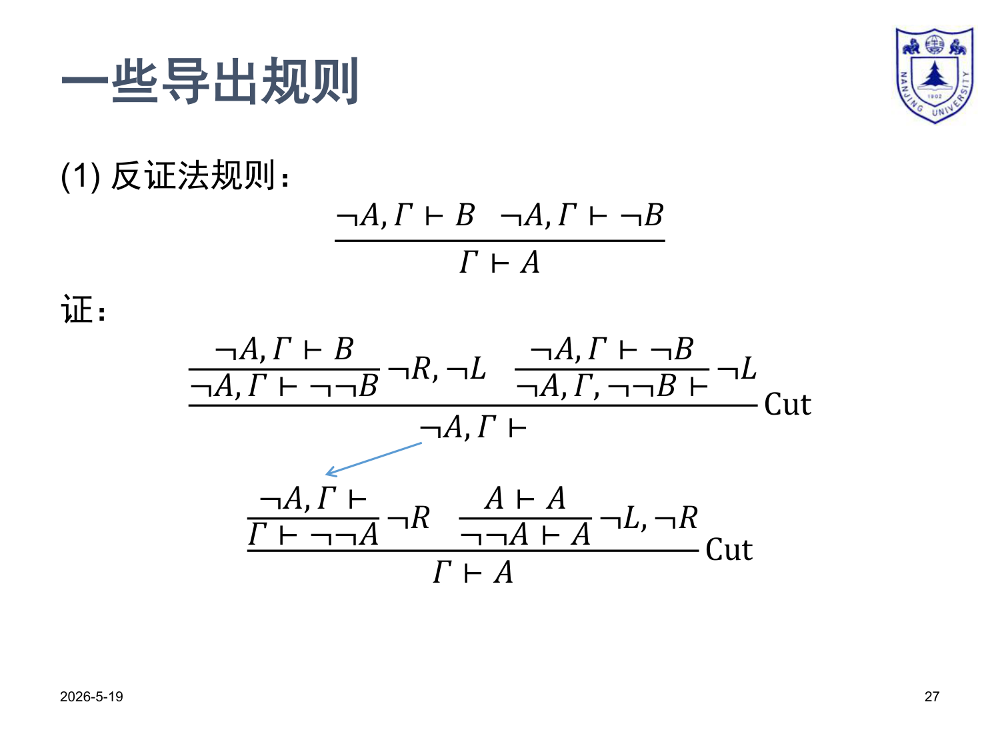
规则： 若 ¬A,Γ⊢B 与 ¬A,Γ⊢¬B 都可证，则 Γ⊢A 可证。
¬A, Γ ⊢ B ¬A, Γ ⊢ ¬B
———————————— ¬R (B→¬¬B), ¬L ———————————— ¬L (把 ¬B 移右去 ⊥)
¬A, Γ ⊢ ¬¬B ¬A, Γ, ¬¬B ⊢
————————————————————————————————————————————— Cut
¬A, Γ ⊢
————————————— ¬R (空右 ⇒ ¬¬A 在右) A ⊢ A
Γ ⊢ ¬¬A ————— ¬L,¬R
¬¬A ⊢ A
————————————————————————————————————————————— Cut
Γ ⊢ A
(2) 分情况规则（PPT p28-p29，p28 略）
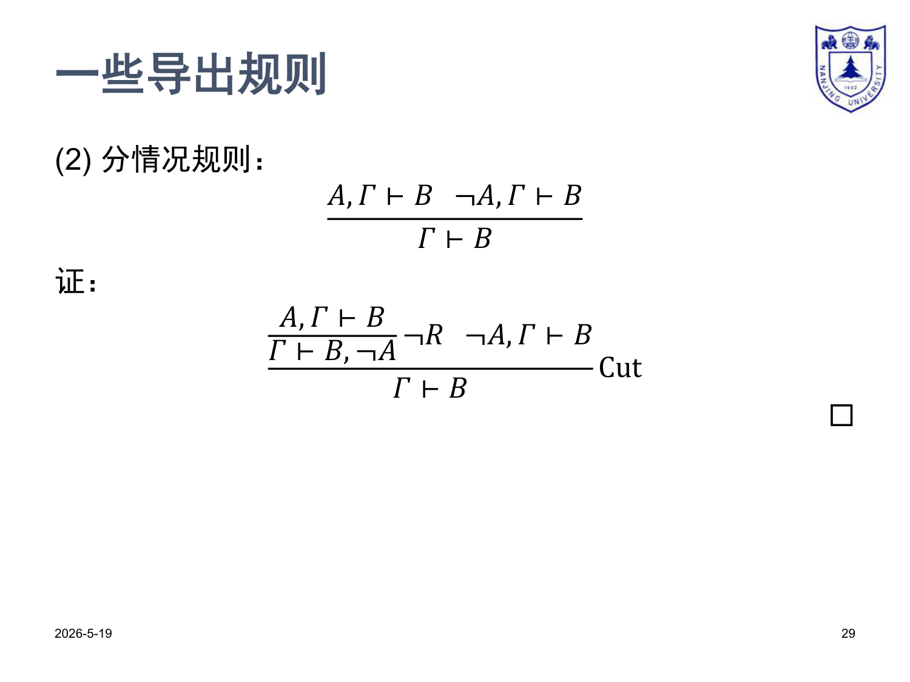
规则： A,Γ⊢B 与 ¬A,Γ⊢B 都可证 ⇒ Γ⊢B 可证。
A, Γ ⊢ B ————————— ¬R Γ ⊢ B, ¬A ¬A, Γ ⊢ B ———————————————————————————— Cut Γ ⊢ B
(3) 逆否推演（PPT p30-p31，p30 略）
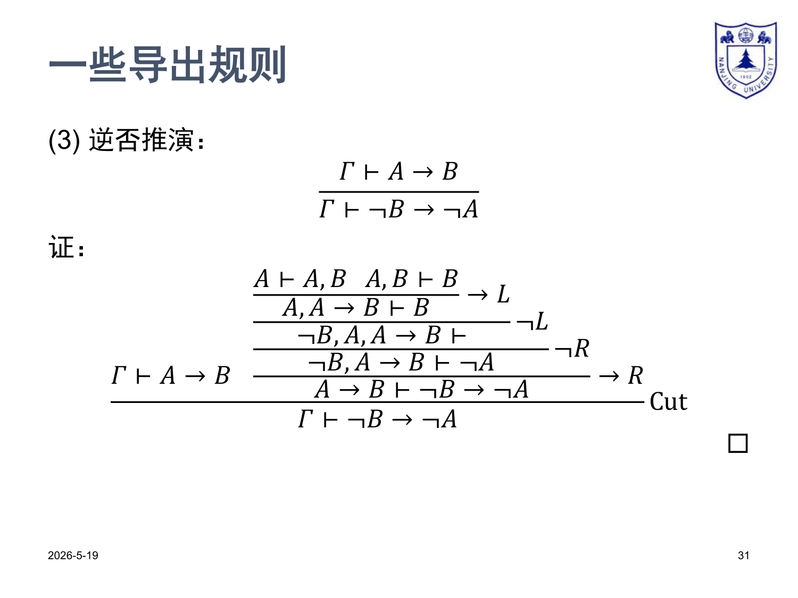
规则： Γ⊢A→B ⇒ Γ⊢¬B→¬A。
A ⊢ A, B A, B ⊢ B —————————————————————— →L A, A→B ⊢ B —————————— ¬L ¬B, A, A→B ⊢ —————————— ¬R ¬B, A→B ⊢ ¬A —————————— →R A→B ⊢ ¬B → ¬A Γ ⊢ A→B —————————————————————————————————————— Cut (桥梁 = A→B) Γ ⊢ ¬B → ¬A
(4) 矛盾规则 (ex falso)（PPT p32-p33，p32 略）
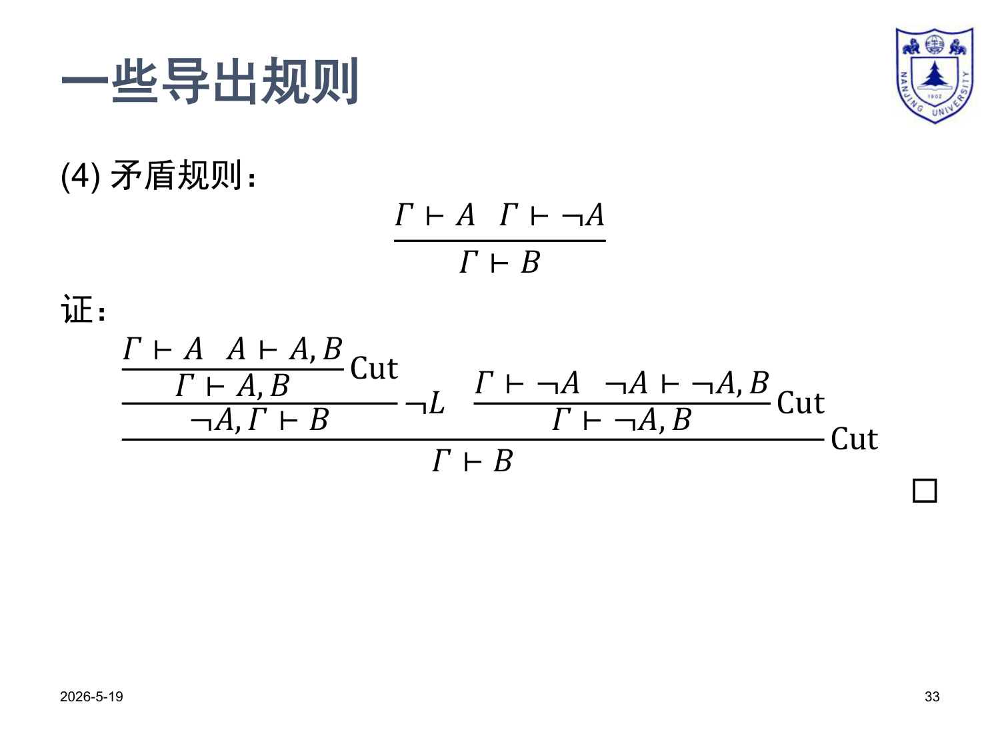
规则： Γ⊢A 与 Γ⊢¬A 都可证 ⇒ Γ⊢B（任意 B）可证。
Γ ⊢ A A ⊢ A, B
—————————————————— Cut
Γ ⊢ A, B
—————————— ¬L
¬A, Γ ⊢ B Γ ⊢ ¬A ¬A ⊢ ¬A, B
—————————————————————— Cut
Γ ⊢ ¬A, B
————————————————————————————————————————— Cut
Γ ⊢ B
(5) MP (分离规则)（PPT p34-p35，p34 略）
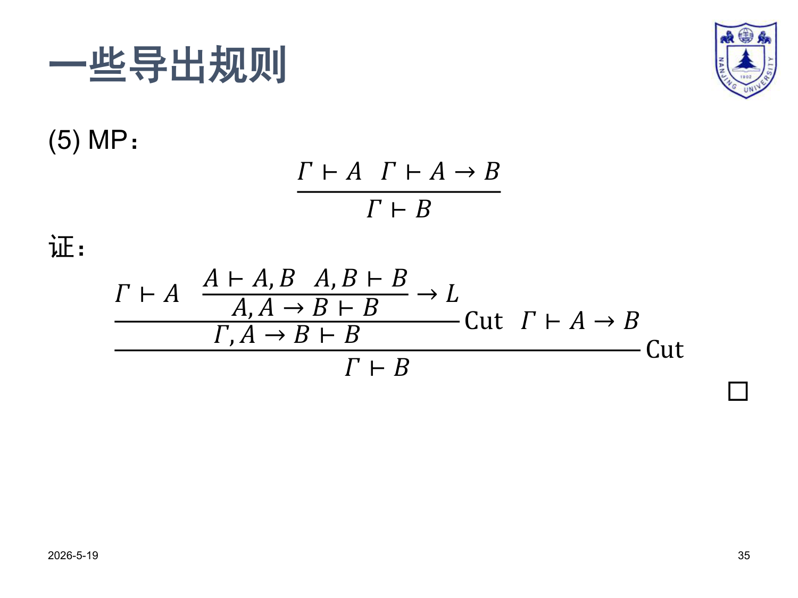
规则： Γ⊢A 与 Γ⊢A→B 都可证 ⇒ Γ⊢B 可证。
A ⊢ A, B A, B ⊢ B
——————————————————— →L
Γ ⊢ A A, A→B ⊢ B
———————————————————————————— Cut (桥梁 = A)
Γ, A→B ⊢ B Γ ⊢ A→B
—————————————————————————————————————————————— Cut (桥梁 = A→B)
Γ ⊢ B
(6) 三段论（PPT p36-p38，p36-37 略）
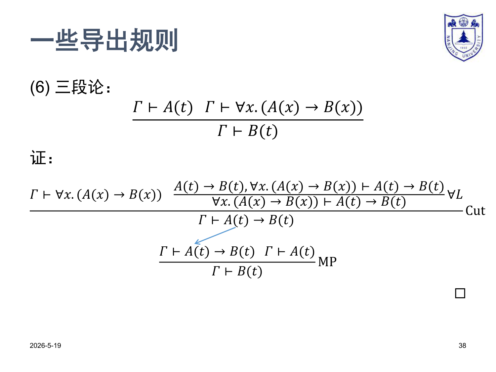
规则： Γ⊢A(t) 与 Γ⊢∀x.(A(x)→B(x)) 都可证 ⇒ Γ⊢B(t) 可证。
第一步：先用 ∀L + Cut 得到 Γ⊢A(t)→B(t)。
A(t)→B(t), ∀x.(A(x)→B(x)) ⊢ A(t)→B(t) ← 公理
—————————————————————————————— ∀L (取 t)
∀x.(A(x)→B(x)) ⊢ A(t)→B(t)
Γ ⊢ ∀x.(A(x)→B(x))
———————————————————————————————————————————————— Cut
Γ ⊢ A(t)→B(t)
第二步：再用上一条 MP 完成。
Γ ⊢ A(t)→B(t) Γ ⊢ A(t) ———————————————————————— MP Γ ⊢ B(t)
6 · G 的语义性质
★ BG6 · 矢列语义 ⊨ 与第 7 章 Γ⊨A 的桥接
第 7 章定义的语义结论是 Γ ⊨ A：左边 Γ 是有限多公式、右边只有一个公式 A。但矢列 Γ ⊢ Δ 的右边可以是有限多个公式。怎么把"右边一堆公式"的有效性也接入旧定义？
桥梁公式：把整个矢列编码成一个公式
然后沿用旧 ⊨：矢列有效就定义为这个单公式被任意模型满足（即永真）。
| 边界情况 | 左 Γ 空 (n=0) | 右 Δ 空 (m=0) | 两侧都空 |
|---|---|---|---|
| 语义 | ⊨ ⋁Bⱼ（"必须有一个 B 真"） | ⊨ ¬(⋀Aᵢ)（"前件不能全真"） | {}⊨{} 约定非有效 |
原 PPT p39：定义 4.6（矢列的"有效"）
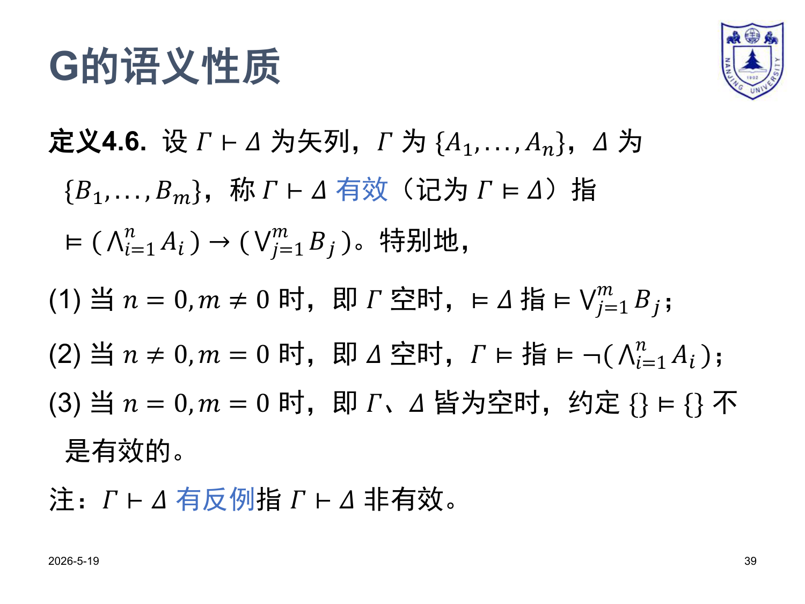
设 Γ⊢Δ 为矢列，Γ = {A₁,…,Aₙ}，Δ = {B₁,…,Bₘ}。称 Γ⊢Δ 有效（记为 Γ⊨Δ），指 ⊨ (⋀ᵢAᵢ) → (⋁ⱼBⱼ)。边界情况见 BG6。
注：Γ⊢Δ 有反例指 Γ⊨Δ 不成立。
原 PPT p40-p41：命题 4.7（有效 / 有反例 的等价改写，累积 → p41）
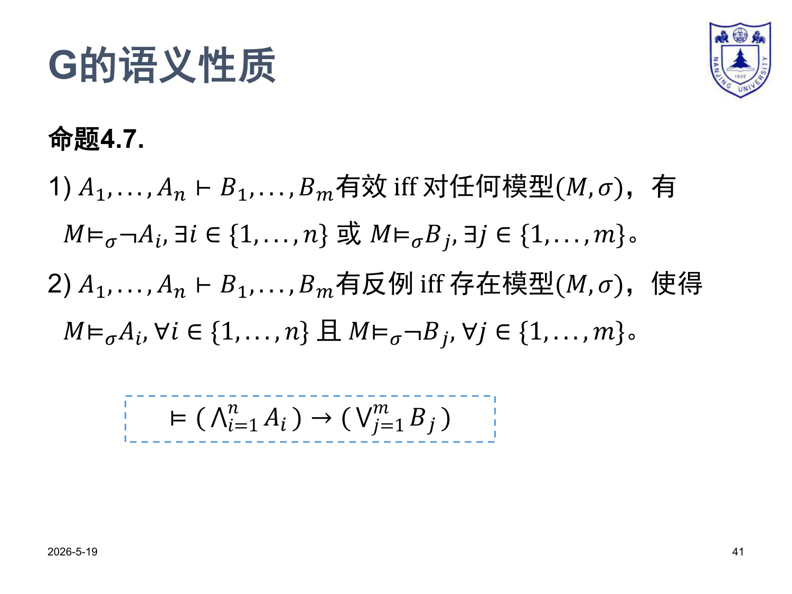
(1) 有效 iff 对任何模型 (𝕄,σ)，要么存在某个 i 使 𝕄⊨σ¬Aᵢ，要么存在某个 j 使 𝕄⊨σBⱼ。
(2) 有反例 iff 存在模型 (𝕄,σ) 使得所有 i 都 𝕄⊨σAᵢ 且所有 j 都 𝕄⊨σ¬Bⱼ。
原 PPT p42：引理 4.8（公理有效）
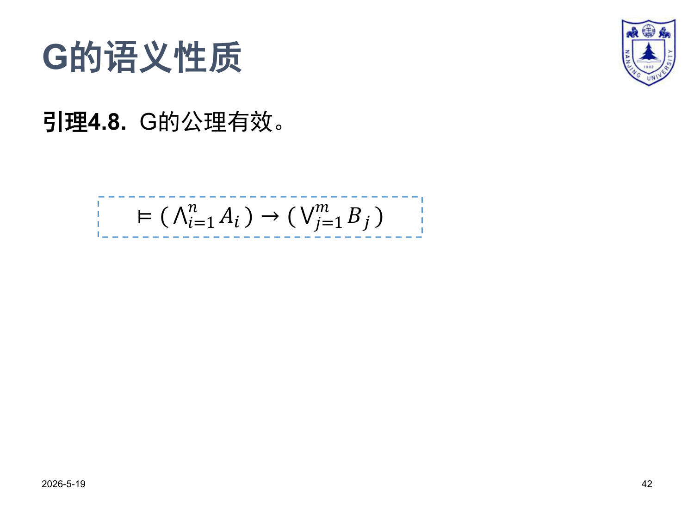
引理 4.8：G 的公理（Γ,A,Δ ⊢ Λ,A,Θ）有效。
证明：显然——左右都有 A，所以任何模型 (𝕄,σ) 下，要么 𝕄⊭σA（则左侧 A 让 ⋀Aᵢ 为假，前件假⇒蕴含真），要么 𝕄⊨σA（则右侧 A 让 ⋁Bⱼ 为真，后件真⇒蕴含真）。两种情况都让 (⋀Aᵢ)→(⋁Bⱼ) 真。 □
原 PPT p43-p45：引理 4.9（除 Cut 外，前提有效 ⇔ 结论有效，累积 → p45）+ ∀R 对偶补全
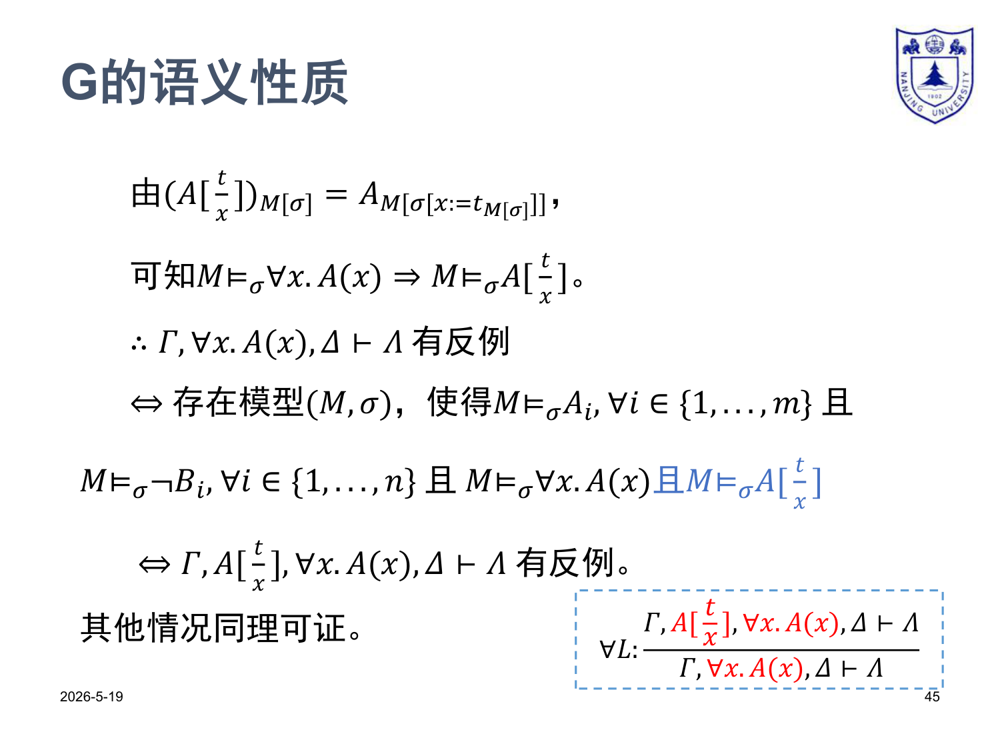
引理 4.9：对于除 Cut 外的 G 中所有规则，所有前提有效 iff 结论有效。
证明策略：只需证"结论有反例 iff 至少一个前提有反例"（即命题 4.7(2) 的对偶形式）。这样取反就得到"全前提有效 ⇒ 结论有效"以及反方向。
情况 ∀L（PPT 完整展示）
规则形式：(Γ, A[t/x], ∀x.A(x), Δ ⊢ Λ) / (Γ, ∀x.A(x), Δ ⊢ Λ)。设 Γ ∪ Δ = {A₁,…,Aₘ}、Λ = {B₁,…,Bₙ}。
结论 Γ, ∀x.A(x), Δ ⊢ Λ 有反例 ⇔ 存在模型 (𝕄,σ)：所有 Aᵢ 真、所有 ¬Bᵢ 真、且 𝕄⊨σ ∀x.A(x) ← 关键引理 (第 7 章): (A[t/x])𝕄[σ] = A𝕄[σ[x:=t𝕄[σ]]] ← 从 𝕄⊨σ ∀x.A(x) 可知对所有 a∈M 都 𝕄⊨σ[x:=a] A ← 特别地取 a = t𝕄[σ]，得 𝕄⊨σ A[t/x] ⇔ 存在模型 (𝕄,σ)：所有 Aᵢ 真、所有 ¬Bᵢ 真、且 𝕄⊨σ ∀x.A(x) 且 𝕄⊨σ A[t/x] ⇔ 前提 Γ, A[t/x], ∀x.A(x), Δ ⊢ Λ 有反例 □
补充：∀R 情况的对偶证明（PPT「其他情况同理」展开）
规则形式：(Γ ⊢ Λ, A[y/x], Θ) / (Γ ⊢ Λ, ∀x.A(x), Θ)，其中 y 为新变元。
结论 Γ ⊢ Λ, ∀x.A(x), Θ 有反例
⇔ 存在 (𝕄,σ)：所有 Aᵢ 真、所有 ¬Bᵢ 真（含 ¬∀x.A(x)）
← ¬∀x.A(x) 真 ⇔ 存在 a∈M 使 𝕄⊨σ[x:=a] ¬A
← 因 y 是新变元（不在结论任何公式中自由出现）⇒ 把 σ 改为 σ' = σ[y:=a]
不影响 Γ, Λ, Θ, A 里其他公式的真值（引理 3.16，第 7 章「真值只依自由变元」）
← 由项替换引理，A𝕄[σ'[x:=σ'(y)]] = (A[y/x])𝕄[σ']
← 故 𝕄⊨σ' ¬A[y/x]
⇔ 存在 (𝕄,σ')：所有 Aᵢ 真、所有 ¬Bᵢ 真、且 𝕄⊨σ' ¬A[y/x]
⇔ 前提 Γ ⊢ Λ, A[y/x], Θ 有反例 □
| 规则 | 用的项 | 关键调用 |
|---|---|---|
| ∀L | 任意 t | 项替换引理 + ∀ 语义条款 |
| ∀R | 新变元 y | 项替换引理 + 引理 3.16（新变元改赋值不影响其他公式） |
| ∃L | 新变元 y | 同 ∀R 的对偶（"存在 a 使 A 真" 把 a 命名为 y） |
| ∃R | 任意 t | 同 ∀L 的对偶（提供见证 t） |
命题联结词 ¬/∨/∧/→ 八条规则的有效性双向等价，是命题 G' 早就处理过的，逐条验证即可，不再展开。
原 PPT p46-p47：引理 4.10（Cut 仅单向，累积 → p47）
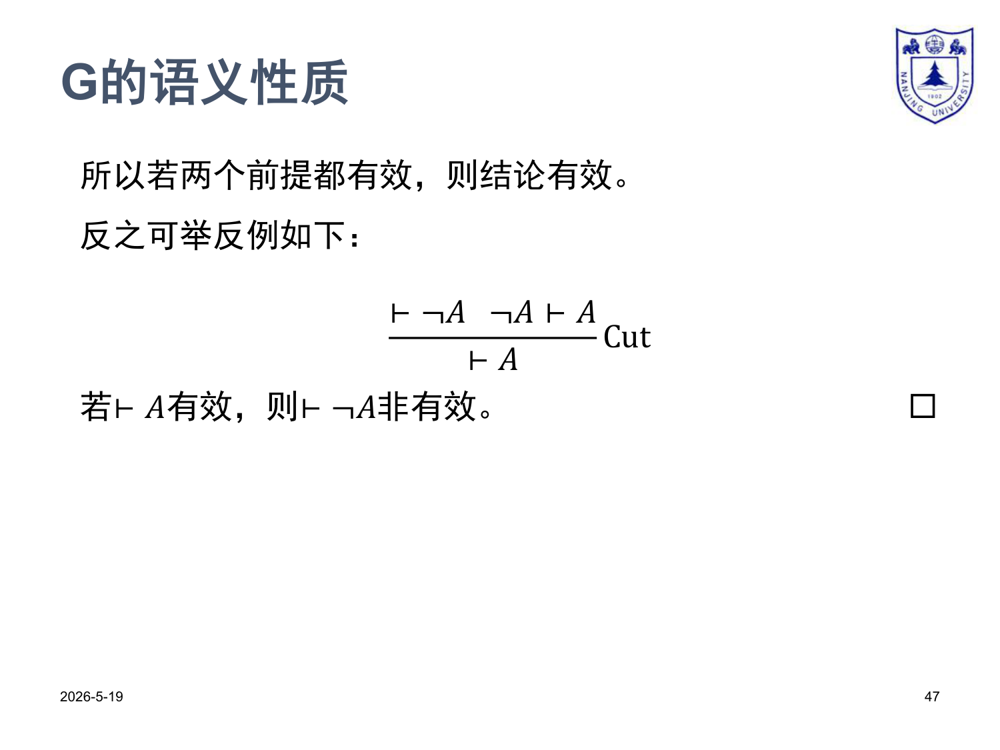
引理 4.10：对于 Cut 规则 (Γ⊢Λ,A Δ,A⊢Θ) / (Γ,Δ⊢Λ,Θ)，若两前提都有效，则结论有效；反之不然。
正方向证明（对偶取反）：
Γ, Δ ⊢ Λ, Θ 有反例
⇒ 存在 (𝕄,σ): Γ, Δ 全真、Λ, Θ 全假
⇒ 看 A 的真假分两种情况：
若 𝕄⊨σA ⇒ Δ, A ⊢ Θ 有反例（A 真、Δ 真、Θ 假）
若 𝕄⊨σ¬A ⇒ Γ ⊢ Λ, A 有反例（Γ 真、Λ 真、Λ ∪ {A} 全假）
⇒ 至少一个前提有反例 □ (取反即得：两前提有效 ⇒ 结论有效)
反方向反例： 考虑 Cut 实例
当 A 是某个永真公式（比如 A = (P → P)），结论 ⊢ A 有效，但前提 ⊢ ¬A 显然不有效。
7 · G 的可靠性
★ BG7 · 可靠性证明骨架
目标：Γ⊢Δ 在 G 中可证 ⇒ Γ⊨Δ。
方法：对 Γ⊢Δ 的证明树做结构归纳（呼应第 6 章 §3 结构归纳法）。证明树就是"叶子是公理 + 节点是规则"的有限树。
| 归纳步骤 | 依赖 |
|---|---|
| 基础（叶子 = 公理） | 引理 4.8：公理有效 |
| 单前提规则节点 | 引理 4.9：前提有效 ⇒ 结论有效（双向） |
| 双前提规则节点（非 Cut） | 引理 4.9：双前提有效 ⇒ 结论有效 |
| Cut 节点 | 引理 4.10：双前提有效 ⇒ 结论有效（仅单向就够） |
原 PPT p48-p50：定理 4.11 (Soundness)（累积 → 完整 p50）
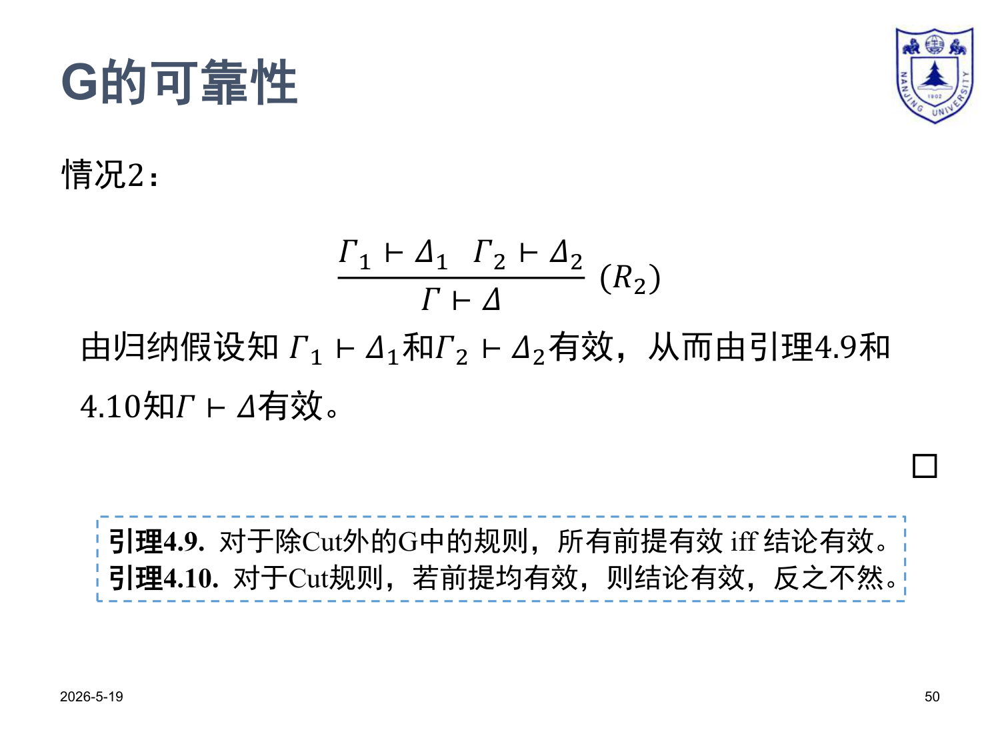
定理 4.11（Soundness）：若 Γ⊢Δ 在 G 中可证，则 Γ⊨Δ。
证明：对 Γ⊢Δ 的证明树结构做归纳。
- 归纳基础：Γ⊢Δ 是公理 ⇒ 由引理 4.8，Γ⊨Δ。
- 归纳假设：证明树中比当前节点高的所有前提矢列都有效。
- 归纳步骤 情况 1（单前提规则 R₁）：
Γ₁ ⊢ Δ₁ ————————— (R₁) Γ ⊢ Δ
由归纳假设知 Γ₁⊢Δ₁ 有效 ⇒ 由引理 4.9 知 Γ⊢Δ 有效（R₁ 不是 Cut，4.9 双向适用）。 - 归纳步骤 情况 2（双前提规则 R₂）：
Γ₁ ⊢ Δ₁ Γ₂ ⊢ Δ₂ ———————————————————— (R₂) Γ ⊢ Δ
由归纳假设知 Γ₁⊢Δ₁ 和 Γ₂⊢Δ₂ 都有效。- 若 R₂ 不是 Cut ⇒ 用引理 4.9 推出 Γ⊢Δ 有效。
- 若 R₂ 是 Cut ⇒ 用引理 4.10 的单向部分推出 Γ⊢Δ 有效。
结构归纳完成，故定理成立。 □
8 · 命题 4.12：弱化定理
原 PPT p51-p53（累积 → 完整 p53）
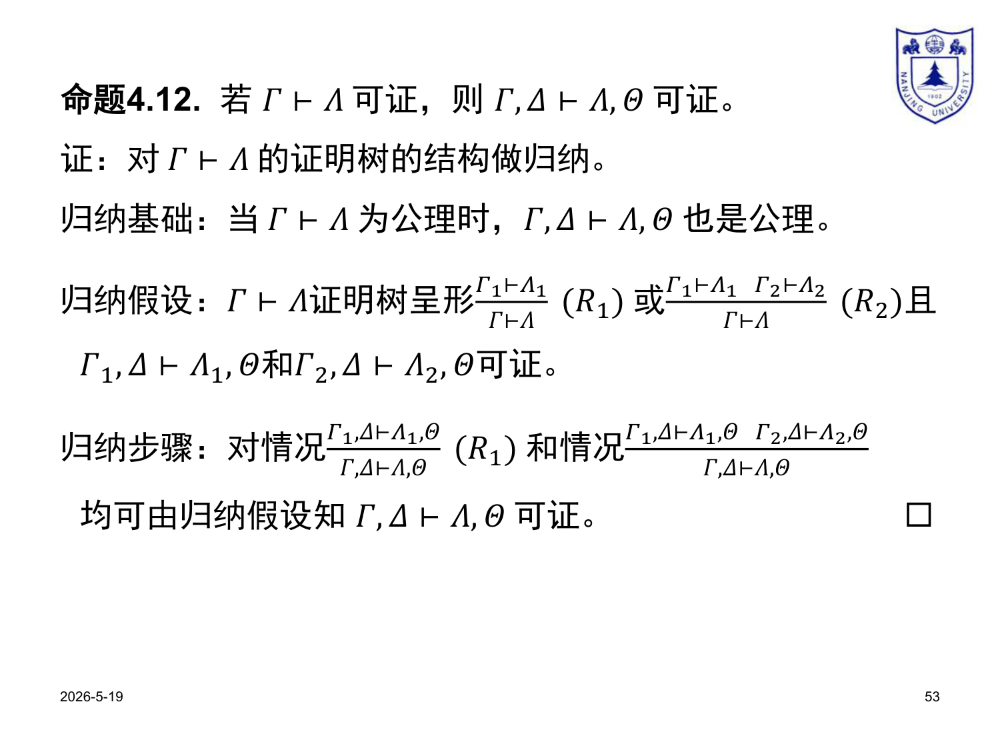
命题 4.12（弱化 / Weakening）：若 Γ⊢Λ 可证，则 Γ, Δ ⊢ Λ, Θ 可证（左右两侧都可任意"加塞"公式）。
直觉：把原证明树原封不动复制，把每个节点矢列的左侧加 Δ、右侧加 Θ。每条 G 规则仍然适用（因为规则只看"活动公式"，背景的 Γ, Λ 可任意带）。
形式证明：对原 Γ⊢Λ 的证明树做结构归纳。
- 基础：Γ⊢Λ 是公理 (含同一公式 A 在两侧) ⇒ Γ, Δ ⊢ Λ, Θ 仍含 A 在两侧，仍是公理。
- 归纳：原证明树最后一步形如 (Γ₁⊢Λ₁) / (Γ⊢Λ) 或双前提情况，每个 Γᵢ⊢Λᵢ 由归纳假设可证 Γᵢ, Δ ⊢ Λᵢ, Θ，再用同样的规则就得到 Γ, Δ ⊢ Λ, Θ。
9 · 怎么证不可证？
★ BG8 · 证不可证的标准套路
武器组合：
- 用可靠性定理 4.11 的逆否：Γ⊭Δ ⇒ Γ⊬Δ。
"不有效则不可证"——只要能在语义层构造反例，就在句法层说明不可证。 - 用命题 4.7(2)：找一个具体模型 (𝕄,σ)，让 Γ 全真、Δ 全假。
原 PPT p54：题目
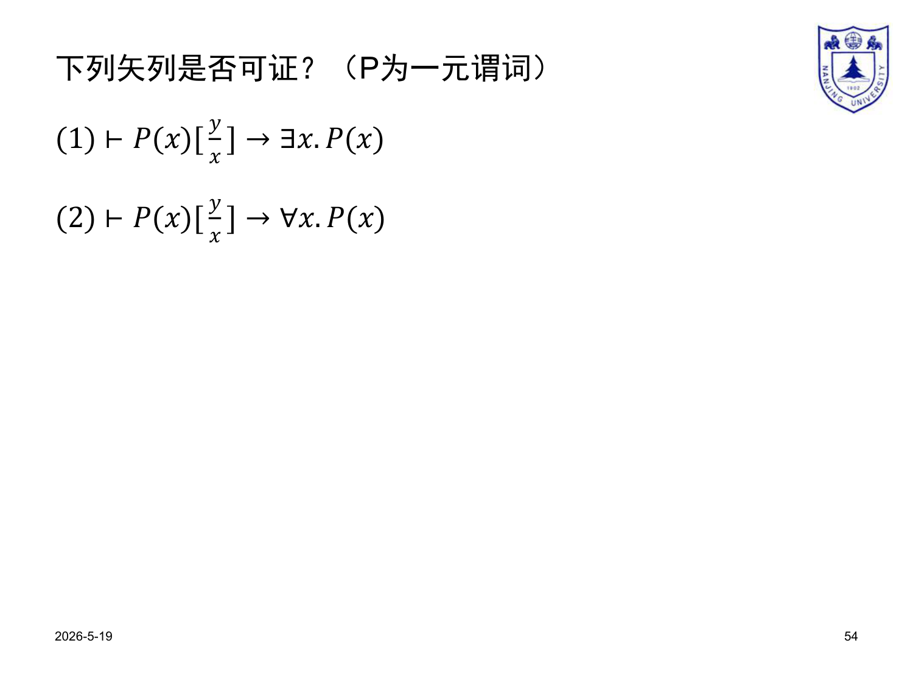
P 是一元谓词，问下列矢列是否可证：
- ⊢ P(x)[y/x] → ∃x.P(x)
- ⊢ P(x)[y/x] → ∀x.P(x)
注意 P(x)[y/x] 就是 P(y)（把 P(x) 中所有自由 x 替换为 y），两道题前件都是 P(y)，差别只在后件 ∃/∀。
(1) 可证（PPT p55-p57，p55-p56 略）
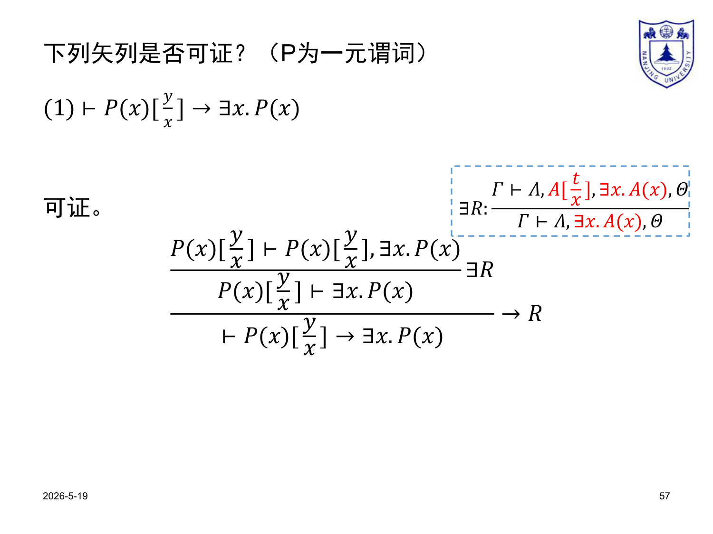
P(x)[y/x] ⊢ P(x)[y/x], ∃x.P(x) ← 公理 (左右共享 P(y)) ———————————————————————————————————— ∃R (取 t = y) P(x)[y/x] ⊢ ∃x.P(x) ———————————————————————————————————— →R ⊢ P(x)[y/x] → ∃x.P(x)
(2) 不可证（PPT p58-p60，p58-p59 略）+ 反例模型补全
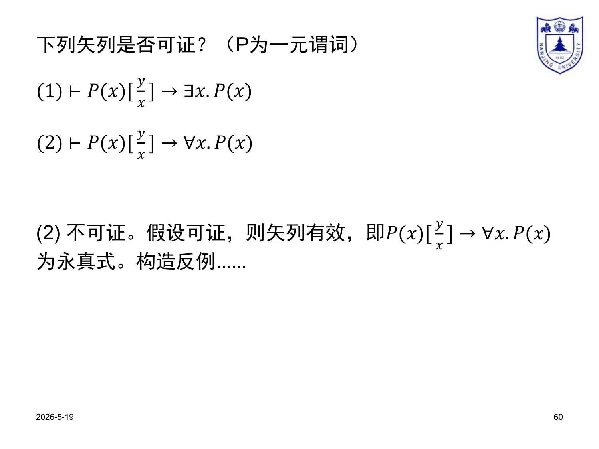
错误尝试（p59）：想直接对结论用 ∀R 把 ∀x.P(x) 拆开成 P(x)[y/x] —— 即要构造
P(x)[y/x] ⊢ P(x)[y/x] ← 看起来像公理 ✘ —————————————————————— ∀R ← 但这里 y 必须是"新变元"， P(x)[y/x] ⊢ ∀x.P(x) 然而 P(x)[y/x] = P(y) 中 y 自由出现！ —————————————————————— →R ⊢ P(x)[y/x] → ∀x.P(x)
违反 ∀R 的新变元约束（y 在结论里自由出现）⇒ 这条路堵死。但"我证不出来"不等于"不可证"，还要严格说明。
正确论证（用可靠性反证）：
- 假设 ⊢ P(x)[y/x] → ∀x.P(x) 可证。
- 由可靠性定理 4.11，该矢列有效，即 ⊨ P(y) → ∀x.P(x)。
- 下面构造一个反例模型，使 P(y) 真但 ∀x.P(x) 假，矛盾。
反例模型（补全 PPT p60 的「……」）：
取结构 𝕄 = (M, I)，M = {a, b}, I(P) = {a}（即 P 只在 a 上为真）。
取赋值 σ，σ(y) = a。
则：
P(y)_𝕄[σ] = (a ∈ I(P)) = 真 ✓ 前件真
∀x.P(x)_𝕄[σ] = (∀c∈M, c ∈ I(P)) = (a∈I(P) 且 b∈I(P)) = 假
✓ 后件假
故 𝕄⊨σ P(y) 但 𝕄⊭σ ∀x.P(x)
⇒ 𝕄⊭σ P(y) → ∀x.P(x)
⇒ 该矢列无效，与可靠性导出的"有效"矛盾 □
10 · 收尾
原 PPT p61：本讲小结
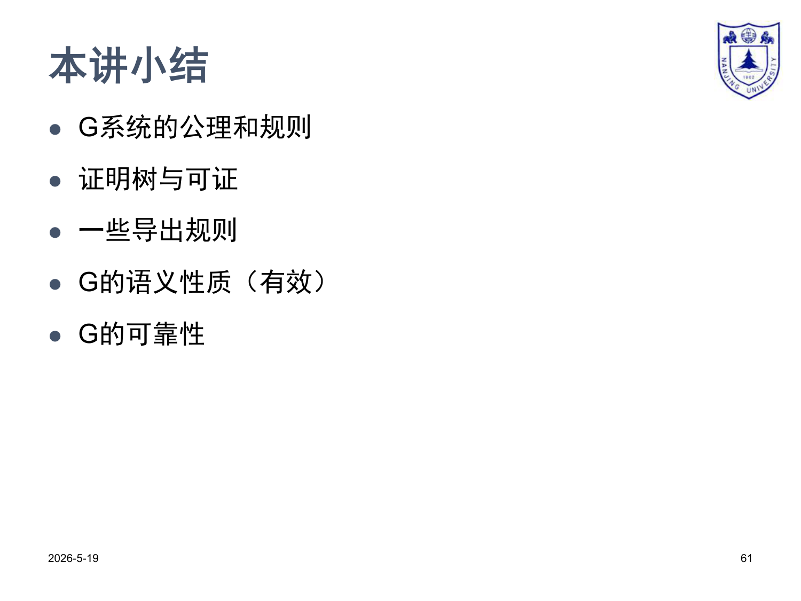
- G 系统的公理和规则（含四条量词规则）
- 证明树与可证
- 一些导出规则（反证 / 分情况 / 逆否 / 矛盾 / MP / 三段论）
- G 的语义性质（矢列"有效"的定义 + 引理 4.8/4.9/4.10）
- G 的可靠性（定理 4.11）
★ BG9 · 全书逻辑闭环回顾
| 层 | 语法 | 语义 | 句法系统 | 可靠性 | 完备性 |
|---|---|---|---|---|---|
| 命题 | 命题字母 / 公式 | 赋值 / 真值表 | G' | ✓ | ✓ |
| 一阶 | 第 6 章：项、公式、自由/约束、替换 | 第 7 章：结构 𝕄、赋值 σ、⊨σ、Γ⊨A | 第 10 章（本讲）：G | 第 10 章（本讲，定理 4.11）✓ | 下一讲（接第 9 章 Hintikka 集 + Henkin 常元扩张） |
本讲在全书的位置：把第 8 章的"陈述"实例化为真正的演算 G，并完成可靠性方向。
下一讲会做什么（预告）：
- 从一致集 Γ（G 内推不出 ⊥）出发。
- 用 Lindenbaum 风格的"极大一致扩张"加 Henkin 风格的"常元 witness 引入"（这一步要往 ℒ 里新加常元，区别于本讲 ∀R/∃L 里用的"新变元"！）。
- 把扩张后的集合证为 Hintikka 集 ⇒ 用第 9 章的项模型机器 + 引理 3.41 得到一个满足它的模型。
- 组合起来得：Γ⊨A ⇒ Γ⊢A —— 完备性定理。